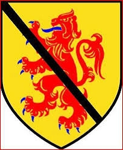

Antavla
187787 Elizabeth Abernethy
Blev ca 94 år.

Far:
James Abernethy of Saltoun (1454 - 1505)
Mor:
Jonet (1460? - 1520)
Född:
omkring 1480 Haddington, East Lotian, Scotland.
[1]
Död:
1574 Scotland.
[1]
Barn med
187786 Sir Gilbert (Alexander) Hay of Delgaty (1478? - 1513)
Barn:
Joanna Hay (1490? - )
Personhistoria
Årtal
Ålder
Händelse
1480?
Födelse omkring 1480 Haddington, East Lotian, Scotland
[1]
1490?
Dottern
93893 Joanna Hay
föds omkring 1490
1505
Fadern
375574 Lord James Abernethy of Saltoun
dör 1505 Edinburg, Scotland
[1]
1511?
Barnbarnet
46946 1st Laird of Balquholly Patrick Mowat
föds omkring 1511 Balquholly, Banffshire, Scotland
1513
Partnern
187786 Sir Gilbert (Alexander) Hay of Delgaty
dör 1513-09-09 Flodden, Kirknewton, Northumberland, England
[2]
1520
Modern
375575 Jonet
dör 1520
1564
Barnbarnet
46946 1st Laird of Balquholly Patrick Mowat
dör 1564 Hordaland, Norge
[3]
1574
Död 1574 Scotland
[1]
Källor
[1]
Keith Montgomery
[2]
Bekkadal
[3]
Wikitree